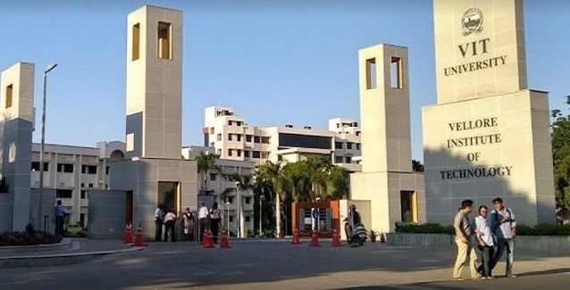
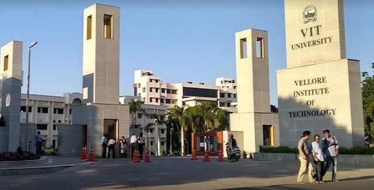
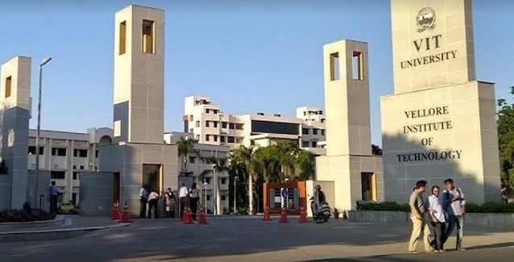

Greetings! I'm Param Chhabra, a native of Jaipur, Rajasthan, born on March 9, 2004. My educational journey began at Jayshree Periwal High School, where I laid the groundwork for my academic pursuits. My dedication and hard work manifested in a commendable 94.5% in my 12th-grade examinations, propelling me into the next phase of my education.
Currently in my fourth semester at the Vellore Institute of Technology, I am delighted to share that my academic journey is marked by a consistently high CGPA of 9.34. This ongoing semester serves as a testament to my commitment to academic excellence and continuous learning.

Immersed in the realm of Computer Science, my passion for coding and technology has been the driving force behind my academic endeavors. While professional experience is yet to be fully realized, my enthusiasm to delve into the world of coding and technology remains unwavering, motivating me to constantly explore new horizons and expand my skill set.
This academic journey is not merely about acquiring knowledge but embracing a mindset of perpetual curiosity and resilience to overcome challenges. Join me as I navigate through the complexities of algorithms, the diversity of programming languages, and the ever-evolving landscape of innovative technologies. Stay tuned for updates, breakthroughs, and reflections on my expanding journey in the tech world.
Beyond technology, I am deeply passionate about collaborative initiatives that contribute to positive societal change. By harnessing the power of technology and community engagement, I aspire to be a part of projects that address real-world challenges and foster meaningful impact. Uptill now, I do not have any professional experience but I have taken part in 2 hackathons and have cleared a few levels in each. I have collaborated in clubs like IEEE and IET in my college through which I got to know various seniors and professors.
Together, let's embark on this exciting adventure, embracing the myriad opportunities that lie ahead in the world of technology and beyond. Through this journey, I am committed to not only shaping my narrative but also contributing to the larger narrative of positive change in our interconnected world. For more information about me, you can check my profile out on LinkedIn.